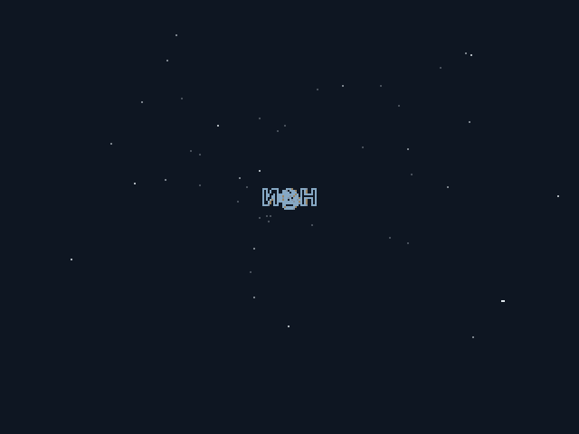

This firmware only works on the ESP32-2432S024C (2.4" "Cheap Yellow Display" with the
CST820 capacitive touch screen). Other CYD boards use different screens, touch chips and pins.
They won't work and may show a blank screen. Flashing replaces whatever is on the board now.
Bluetooth (PS4)
- Pairs a PS4 (DualShock 4) controller
- Landscape by default; touch works too
- 2.9 MB of flash for games
Touch only
- On-screen buttons, portrait
- No Bluetooth
- 3.3 MB of flash for games
How to flash
- Use Chrome or Edge on a computer (Windows, Mac, Linux or ChromeOS). Phones and Firefox/Safari can't flash.
- Plug the board in with a USB cable that carries data (some cables only charge).
- Click one of the Install buttons above and pick the board's port in the list
(often
USB-SERIAL CH340orCP210x). If no port shows up, install the CH340 driver and try again. - Choose Erase the first time you flash, then Install. It takes about a minute.
- If it can't connect, hold the board's BOOT button, tap RST, release BOOT and click Install again.
- When it's done, press RST (or unplug and replug). The H@N boot screen appears.
Then set up the SD card
Format a microSD card as FAT32 and make /Roms/GB, /Roms/GBC and /Roms/NES.
Put your own game files in them (.gb, .gbc, .nes); sub-folders are fine.
Cheats go in /CHEATS/GB, /CHEATS/GBC and /CHEATS/NES:
download the ready-made cheat pack (2,572 games) and unzip it to the root of the card.
The full guide is in the README on GitHub.
Prefer the command line?
Download a .bin from the firmware folder and run:
esptool.py --chip esp32 --baud 921600 write_flash 0x0 HAN-CYD-GBC-BT.bin